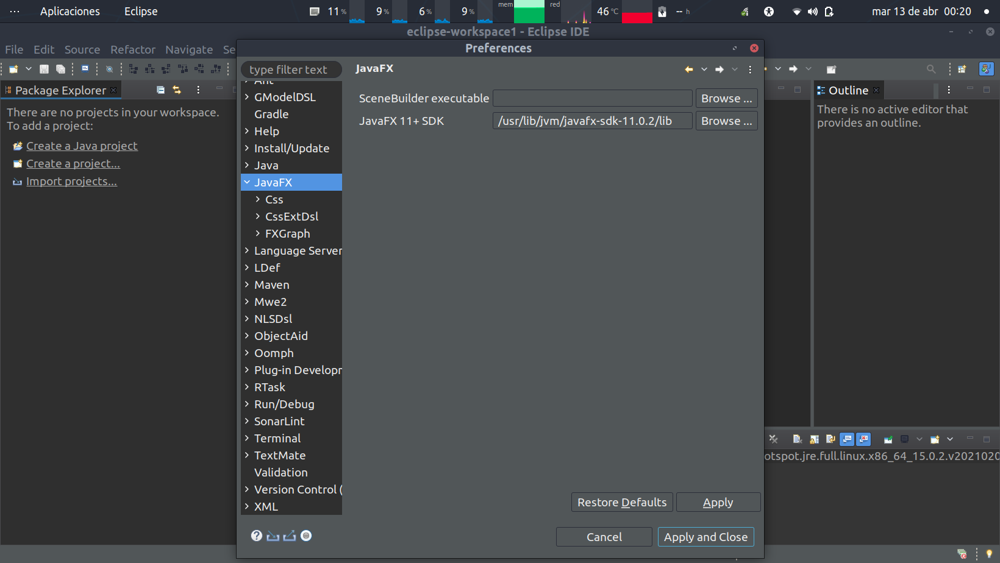
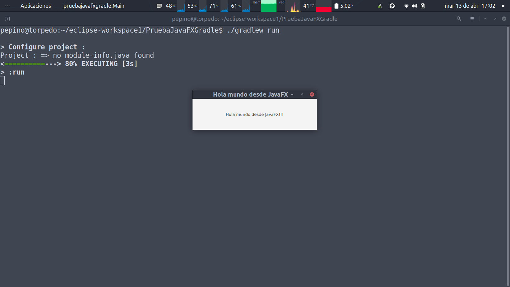

JavaFX
JavaFX es una tecnología creada por Oracle para el desarrollo de interfaces gráficas para nuestras aplicaciones en el lenguaje de programación Java. Para crear interfaces gráficas en Java, antiguamente se utilizaba AWT y luego posteriormente Swing, pero la potencia de JavaFX no tiene ni punto de comparación a la de sus predecesoras. JavaFX fue anunciado en mayo de 2007 y liberado en diciembre de 2008.
En el jdk 8, JavaFX venía incluido. Oracle desde entonces ha hecho muchos cambios en la filosofía adoptada con el jdk. Como ya sabéis ya dejó de ser libre su jdk, aunque lo liberó en el openjdk el cual impulsa activamente. También, debido a su política de actualización del jdk y dado que JavaFX no evolucionaba a ese ritmo, decidió independizar el jdk de JavaFX. También decidió no generar binarios de su herramienta de diseño para dicha tecnología, Scene Builder. Por todo ello, la empresa Gluon, fue la encargada de empaquetar las librerías de JavaFX y los binarios de Scene Builder.
Para crear aplicaciones utilizando JavaFX debemos tener el SDK de JavaFX. El SDK de JavaFX podemos descargarlo de la página de Gluon en la que podemos elegir la versión empaquetada para nuestro SO.
Página de descarga del SDK de Java FX
Para poder integrarlo en nuestra aplicación y/o Eclipse tenemos varias opciones. Veamos las diferentes opciones y los pros y contras de cada una de ellas:
Como librería de usuario en Eclipse
Una vez descargado el SDK de JavaFX debemos integrarlo en Eclipse como una librería de usuario. Para ello, en Eclipse, debemos crear una nueva librería de usuario. Elegimos la opción Window|Preferences||Java|Build Path|User Libraries y elegimos la opción New y le damos un nombre apropiado.
Cuando ya hemos creado la librería, elegimos la opción Add External JARs... y añadimos todos los ficheros .jar situados en la localización donde hemos descargado el SDK bajo la carpeta lib.
Hecho esto creamos un nuevo proyecto java y a éste le añadimos la librería de usuario que hemos creado anteriormente para lo que utilizaremos la opción Build Path|Add Libraries... del menú contextual que nos aparece a nivel de proyecto. Elegimos User Library y la librería anteriormente creada.
Damos contenido al proyecto a modo de primer ejemplo, para lo que puedes descargar y añadir los siguientes ficheros: Main.java, panelPrincial.fxml y Controlador.java.
Si intentamos ejecutar el fichero Main.java desde Eclipse como Java Application obtendremos este error en el IDE.
Esto es debido a que la VM de Java comprueba que la clase a la que pertenece el método main que se está ejecutando no extienda de Application. Para solucionarlo tenemos dos opciones:
- Añadir los módulos necesarios como argumentos de la VM de Java (
--module-path ${project_classpath} --add-modules javafx.controls,javafx.fxml): - Crear una clase lanzadora que no extienda de Application (
LanzadoraMain.java):
Llegados a este punto debemos ser capaces de ejecutar la clase principal, o la clase lanzadora, dependiendo de la opción elegida y veremos una salida parecida a la mostrada.
Esta opción tiene el inconveniente que no es portable ya que la librería la hemos añadido al IDE pero está localizada localmente. Pero es un buen comienzo para poder empezar a practicar.
Utilizando el plugin e(fx)clipse
Otra opción es utilizar el plugin de Eclipse para trabajar con Java FX: e(fx)clipse.
Este plugin lo podemos instalar accediendo al mercado de eclipse mediante la opción Help|Eclipse Marketplace... buscamos e(fx)clipse y lo instalamos normalmente como cualquier otro plugin.
Una vez hecho esto debemos configurar correctamente el camino al SDK y así que este plugin sea capaz de localizarlo y añadirlo automáticamente a los proyectos que creemos usándolo. Para ello debemos acceder a la opción Window|Preferences|JavaFX e indicar la localización donde hemos descargado el SDK de JavaFX (tiene una primera opción que por ahora obviaremos y de la que hablaremos más adelante) en la segunda opción etiquetada como JavaFX 11+ SDK.

Ahora crearemos un proyecto utilizando el plugin recién instalado.
Nos creará un esqueleto de proyecto (en el que simplemente he cambiado que el lenguaje utilizado sea FXML) tal el como muestra su estructura y cuya ejecución sería la mostrada.

La única ventaja que tiene utilizar este plugin es que añade automáticamente el SDK de Java FX y también los argumentos adecuados a la VM para poder ejecutarlo. Al igual que en la opción anterior nos encontramos con una opción, que por si sola, no es portable
Utilizando gradle como gestor de dependencias
Por último podemos utilizar gradle para gestionar las dependencias y ayudarnos en el empaquetado.
Para ello creamos un nuevo proyecto gradle.
Sustituimos el fichero build.gradle por el que muestro a continuación. En él indicamos que queremos utilizar el plugin de gradle para JavaFX y los módulos a cargar. También se indica quién será la clase principal a la hora de ejecutarlo y cómo se empaquetará el fichero jar y qué clase se indicará en el fichero de manifiestro como clase principal.
plugins {
id 'application'
id 'org.openjfx.javafxplugin' version '0.0.9'
}
repositories {
jcenter()
}
dependencies {
}
javafx {
version = "15.0.1"
modules = [ 'javafx.controls', 'javafx.fxml' ]
}
mainClassName = 'pruebajavafxgradle.Main'
jar {
manifest {
attributes 'Main-Class': 'pruebajavafxgradle.LanzadoraMain'
}
from {
configurations.runtimeClasspath.collect { it.isDirectory() ? it : zipTree(it) }
}
}
Creamos la estructura que se muestra con los siguientes ficheros (es muy parecido al ejemplo utilizando la primera solución): Main.java, LanzadoraMain.java, Controlador.java y panelPrincipal.fxml. Refrescamos el proyecto gradle para que se descargue las librerías.
Ahora podremos ejecutar la clase LandadoraMain desde el IDE o bien podremos utilizar gradle para ello.

Si te das cuenta, en este ejemplo hemos colocado el fichero .fxml en otro directorio aunque bajo el mismo paquete. Esta es lo forma correcta de trabajar con recursos para que luego funcione todo correctamente. A veces es recomendable estrucutrar los recursos en diferentes paquetes: imagenes, vistas (con los ficheros .fxml), estilo (con los ficheros .css), etc. En este caso lo mejor sería utilizar una interfaz marcadora a la altura del paquete con los demás subpaquetes y utilizar ésta para acceder a ese paquete ya que con el método getResource no podemos utilizar el .. ni el . para navegar por los paquetes.
De esta forma podríamos localizar un recurso fácilmente desde cualquier otro paquete y que nos funcionase tanto en el IDE como en el fichero empaquetado jar. Por ejemplo:
...
FXMLLoader cargadorVentanaPrincipal = new FXMLLoader(LocalizadorRecursos.class.getResource("vistas/VentanaPrincipal.fxml"));
...
escena.getStylesheets().add(LocalizadorRecursos.class.getResource("estilos/estilos.css").toExternalForm());A continuación os dejo el enlace a la página de Oracle sobre JavaFX donde podréis encontrar multitud de documentación y ejemplos, aunque si buscáis en la web también encontraréis mucha documentación sobre esta tecnología incluso en castellano.
Ahora vamos a ir viendo las diferentes posibilidades que nos ofrece JavaFX para crear nuestras aplicaciones.